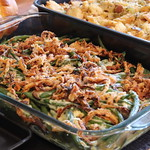

Green Bean Casserole

Description
Very tasty and scrumptious green bean casserole. Can be made ahead of time and will take 25 minutes.
6 servings will be made from this recipe.
Ingredients
- Green beans
- Canned mushroom soup
- Cheese
- Fried onions
- Optional ingredients:Bacon, garlic, black pepper, or sautéed mushrooms
Steps
- Mix green beans and soup together and microwave until warm
- Add half the cheese and stir. Remicrowave to previous temperature
- Add toppings and transfer to baking dish
- Bake for 10 minutes at 350F in a preheated oven or until onions are browned and cheese melted